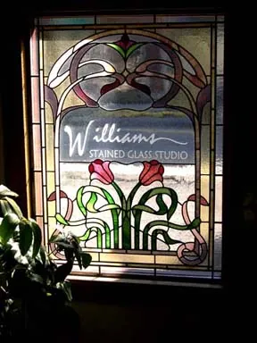

The studio on Castle Shannon Boulevard
A family-owned studio with over 100 years of combined experience in custom stained glass. The staff help you choose the right design, glass colour and method of installation, and every piece is guaranteed for the quality of its craftsmanship and materials.

The workshop
Designs are drawn, printed full size, cut and leaded here.
The showroom
Walk-ins are always welcome. Appointments are appreciated, so the right person is at the studio to talk through your project.
What clients wrote to the studio
My husband and I absolutely love our stained glass window! It is gorgeous and Mike did a wonderful job installing it. He even removed trim and painted to make sure it looked perfect!
We are extremely happy with the window, and the installation was perfect too. We couldn't be happier. You all were wonderful to work with every step of the way.
I have received so many complements. Your help in drawing, choosing colors, and installing are first-rate. Keep up the good work.
The windows are spectacular and we are priviledged to have your work in our house.
Thank you for our beautiful window. It far surpasses any of my expectations.
Working with Williams Stained Glass studio was a pleasant, fun experience. We have nothing but the highest regard for Williams Stained Glass, your work ethic, and competence.
Have a window in mind, or one that needs help?
Call or email for a free estimate. Walk-ins are welcome at the Pittsburgh studio, Monday to Friday, 9 to 4.